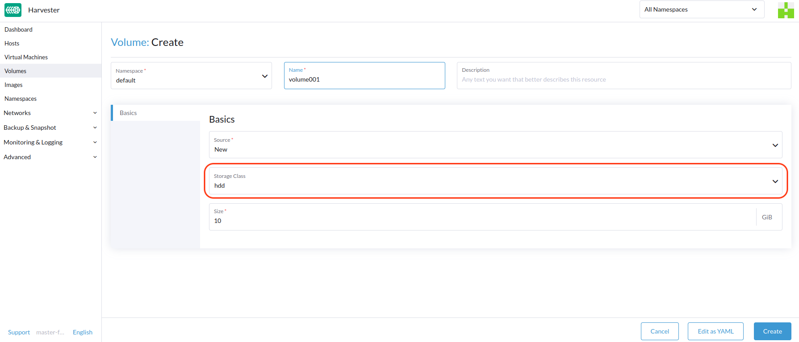

|
Este documento foi traduzido usando tecnologia de tradução automática de máquina. Sempre trabalhamos para apresentar traduções precisas, mas não oferecemos nenhuma garantia em relação à integridade, precisão ou confiabilidade do conteúdo traduzido. Em caso de qualquer discrepância, a versão original em inglês prevalecerá e constituirá o texto official. |
StorageClass
SUSE Virtualization usa StorageClasses para descrever como SUSE Storage deve provisionar volumes. SUSE Storage StorageClasses podem mapear para políticas de réplica, políticas de agendamento de nós ou políticas de agendamento de disco criadas pelos administradores do cluster. Esse conceito é referido como arquivo de controle em outros sistemas de armazenamento.
|
A StorageClass padrão Para evitar esse problema, você pode realizar uma das seguintes ações:
|
Para informações sobre suporte ao provisionamento de volumes usando drivers de interface de armazenamento de contêiner externo (CSI), veja Suporte a Armazenamento de Terceiros.
Criando uma StorageClass
-
UI
-
API
-
Terraform
|
Depois que uma StorageClass é criada, os campos na seção Parâmetros e a maioria das outras opções se tornam imutáveis. |
-
Vá para Avançado → StorageClasses.

-
Na seção de informações gerais, configure o seguinte:
-
Nome: Nome da StorageClass.
-
Descrição (opcional): Descrição da StorageClass.
-
Provisionador: Provisionador que determina o plugin de volume a ser usado para provisionar volumes.
-
-
Na aba Parâmetros, configure o seguinte:
-
Número de Réplicas: Número de réplicas criadas para cada volume SUSE Storage. O valor padrão é
3. -
Tempo Limite de Réplica Obsoleta: Número de minutos que SUSE Storage aguarda antes de limpar uma réplica com o status
ERROR. O valor padrão é30. -
Selecionador de Nó (opcional): Tags de nó a serem correspondidas durante o agendamento de volumes. Você pode adicionar tags de nó na tela de configuração do host (Host → Editar Config).
-
Selecionador de Disco (opcional): Tags de disco a serem correspondidas durante o agendamento de volumes. Você pode adicionar tags de disco na tela de configuração do host (Host → Editar Config).
-
Migrável: Configuração que habilita Migração Ao Vivo para volumes criados usando a StorageClass. O valor padrão é
Yes.
-
|
Se uma StorageClass com uma contagem de réplicas de |
-
Na aba Personalizar, configure o seguinte:
-
Política de Reclaim: Reclaim Policy:
Política de Reclaim que se aplica a volumes criados usando a StorageClass. O valor padrão éDelete.-
Apagar: Apaga volumes e os dispositivos subjacentes quando a reivindicação do volume é deletada.
-
Reter: Mantém o volume para limpeza manual.
-
-
Permitir Expansão de Volume: Configuração que permite a expansão de volume, que envolve o redimensionamento do dispositivo de bloco e a expansão do sistema de arquivos. Quando a configuração está habilitada, você pode aumentar o tamanho do volume editando o objeto PVC correspondente.
Você só pode usar o recurso de expansão de volume para aumentar o tamanho do volume.
-
Modo de Vinculação de Volume: Configuração que controla quando a vinculação de volume e o provisionamento dinâmico ocorrem. O valor padrão é
Immediate.-
Imediato: Vincula e provisiona um volume assim que o PVC é criado.
-
WaitForFirstConsumer: Vincula e provisiona um volume assim que uma máquina virtual usando o PVC é criada.
-
-
-
Clique em Criar.
apiVersion: storage.k8s.io/v1
kind: StorageClass
metadata:
annotations:
storageclass.beta.kubernetes.io/is-default-class: 'true'
storageclass.kubernetes.io/is-default-class: 'true'
name: single-replica
parameters:
migratable: 'false'
numberOfReplicas: '1'
staleReplicaTimeout: '30'
provisioner: driver.longhorn.io
reclaimPolicy: Delete
volumeBindingMode: Immediate
allowVolumeExpansion: trueresource "harvester_storageclass" "single-replica" {
name = "single-replica"
is_default = "true"
allow_volume_expansion = "true"
volume_binding_mode = "immediate"
reclaim_policy = "delete"
parameters = {
"migratable" = "false"
"numberOfReplicas" = "1"
"staleReplicaTimeout" = "30"
}
}Configurações de Localidade dos Dados
Você pode usar o parâmetro dataLocality quando pelo menos uma réplica de um volume SUSE Storage deve ser agendada no mesmo nó que o pod que usa o volume (sempre que possível).
SUSE Virtualization suporta oficialmente a localidade de dados. Isso se aplica até mesmo a volumes criados a partir de imagens. Para configurar a localidade de dados, crie uma nova StorageClass na interface do SUSE Virtualization (Classes de Armazenamento → Criar → Parâmetros) e adicione o seguinte parâmetro:
-
Chave:
dataLocality -
Valor:
desabilitadooumelhor-esforço

Opções de Localidade de Dados
SUSE Virtualization atualmente suporta as seguintes opções:
-
desabilitado: Quando aplicado, SUSE Storage pode ou não agendar uma réplica no mesmo nó que o pod que utiliza o volume. Ela é a opção padrão. -
melhor-esforço: Quando aplicado, SUSE Storage sempre tenta agendar uma réplica no mesmo nó que o pod que utiliza o volume. SUSE Storage não para o volume mesmo quando uma réplica local não está disponível devido a uma limitação ambiental (por exemplo, espaço em disco insuficiente ou tags de disco incompatíveis).
|
SUSE Storage fornece uma terceira opção chamada |
Para mais informações, veja Localidade de Dados na documentação do SUSE Storage.
Configurações do Importador de Dados Containerizado (CDI)
SUSE Virtualization integra-se com o Importador de Dados Containerizado (CDI) para gerenciar imagens de VM para os seguintes StorageClasses:
-
Motor de Dados Longhorn V2
-
LVM
-
Armazenamento de terceiros
Você pode usar a interface do SUSE Virtualization ou anotações CDI para substituir as configurações padrão dos atributos de StorageClass CDI.
|
A interface do SUSE Virtualization atualmente não suporta o uso de CDI com armazenamento de terceiros. Você deve aplicar as anotações CDI SUSE Virtualization diretamente ao StorageClass de terceiros. |
Para habilitar a edição das configurações de CDI para operações do dia 2, SUSE Virtualization fornece atributos de StorageClass que atualizam automaticamente as configurações subjacentes de CDI.
Cada campo na tela Configurações de CDI corresponde a uma anotação no StorageClass.
| Campo da UI | Anotação | Descrição | Valores Suportados | Exemplo |
|---|---|---|---|---|
Modo de Volume / Modos de Acesso |
|
Modo de volume PVC padrão e modos de acesso |
Objeto JSON com modos de volume e modos de acesso |
|
Volume Snapshot Class |
|
Nome da VolumeSnapshotClass a ser usado ao tirar instantâneos de imagens de máquinas virtuais sob esta StorageClass. Esta configuração se aplica apenas quando você está usando a estratégia de clone |
Valid VolumeSnapshotClass name |
|
Estratégia de Clone |
|
Estratégia de clone a ser usada para volumes criados com imagens de VM que utilizam esta StorageClass. |
|
|
Sobrecarga do Sistema de Arquivos |
|
Porcentagem de sobrecarga do sistema de arquivos a ser considerada ao calcular o tamanho do PVC. |
Valor decimal entre 0 e 1 com um máximo de 3 dígitos |
|
Exemplo de uma configuração YAML de StorageClass:
apiVersion: storage.k8s.io/v1
kind: StorageClass
metadata:
name: lvm
annotations:
cdi.harvesterhci.io/storageProfileCloneStrategy: snapshot
cdi.harvesterhci.io/storageProfileVolumeModeAccessModes: '{"Block":["ReadWriteOnce"]}'
cdi.harvesterhci.io/storageProfileVolumeSnapshotClass: lvm-snapshot
cdi.harvesterhci.io/filesystemOverhead: '0.05'|
Evite alterar o arquivo de controle de armazenamento ou CDI diretamente. Em vez disso, permita que o controlador SUSE Virtualization sincronize e persista a configuração do arquivo de controle de armazenamento por meio do uso de anotações CDI. |
Os seguintes são os valores padrão para as StorageClasses suportadas:
-
Motor de Dados Longhorn V2
-
cdi.harvesterhci.io/storageProfileCloneStrategy:"copy" -
cdi.harvesterhci.io/storageProfileVolumeSnapshotClass:"longhorn-snapshot"
-
-
LVM
-
cdi.harvesterhci.io/storageProfileVolumeModeAccessModes:'{"Block":["ReadWriteOnce"]}' -
cdi.harvesterhci.io/storageProfileCloneStrategy:"snapshot" -
cdi.harvesterhci.io/storageProfileVolumeSnapshotClass:"lvm-snapshot"
-
-
Armazenamento de terceiros: Veja
storagecapabilities.gono repositório CDI. Se o provedor não estiver listado, você deve especificar a anotaçãocdi.harvesterhci.io/storageProfileVolumeModeAccessModes.
Casos de Uso
Cenário de HDD
Com a introdução de StorageClass, os usuários agora podem usar HDDs para armazenamento em camadas ou arquivamento de dados frios.
|
HDD não é recomendado para clusters RKE2 de convidados ou VMs com requisitos de desempenho de disco elevados. |
Prática Recomendada
Primeiro, adicione seu HDD na página Host e especifique as tags de disco conforme necessário, como HDD ou ColdStorage. Para mais informações sobre como adicionar discos extras e tags de disco, consulte Multi-disk Management para detalhes.


Em seguida, crie um novo StorageClass para o HDD (use as tags de disco acima). Para discos rígidos com grande capacidade, mas desempenho lento, o número de réplicas pode ser reduzido para melhorar o desempenho.

Agora você pode criar um volume usando o acima StorageClass com HDDs, principalmente para armazenamento a frio ou para arquivamento.
